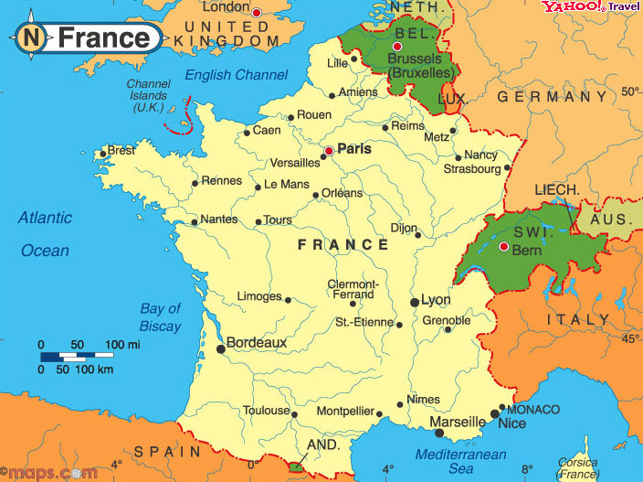

General Information

| Surface area: | 547.026km2 | |
| Capital City: | Paris | |
| Language: | French | |
| Currency: | Avro (€) 6, CFP Franc | |
| National Anthem: | La Marseillaise | |
| President: | Nicolas Sarkozy | |
| Prime Minister: | François Fillon | |
| National Policy: | Liberté, Égalité, Fraternité ("Liberty, Equality, Fraternity") | |
| Major cities: | Lyon, Marsilya, Lille, Bordeaux, Toulouse, Nantes, Nice, Toulon, Grenoble, Brest, Dijon, Le Mans, Angers, Clermont-Ferrand, Limoges, Amiens, Nimes, Tours. | |
| Surface Shapes: | Geologically analyzed in three different surface structure observed in the country; Massive power plant, Armorikan as remnants of the Massif; The plains of Aquitaine basin, West of the Paris Basin, the sampled Plains; the Pyrenees, the Alps and the Southeast South sampled late, fragmented mountains, extending narrow valleys between them. 90 thousand km2 of the country 1/6 time of Massive power plant, covering 345-225 million years ago, coinciding with the period is a giant mass Hersinyen has emerged. Hard granite rock formed from change. In the South, on the East from the Rhone Valley in the Pyrenees, with Carcasson Crowns and are separated from the Alps, on the border of Germany with the mountains connects to Vojlar Morvan. |